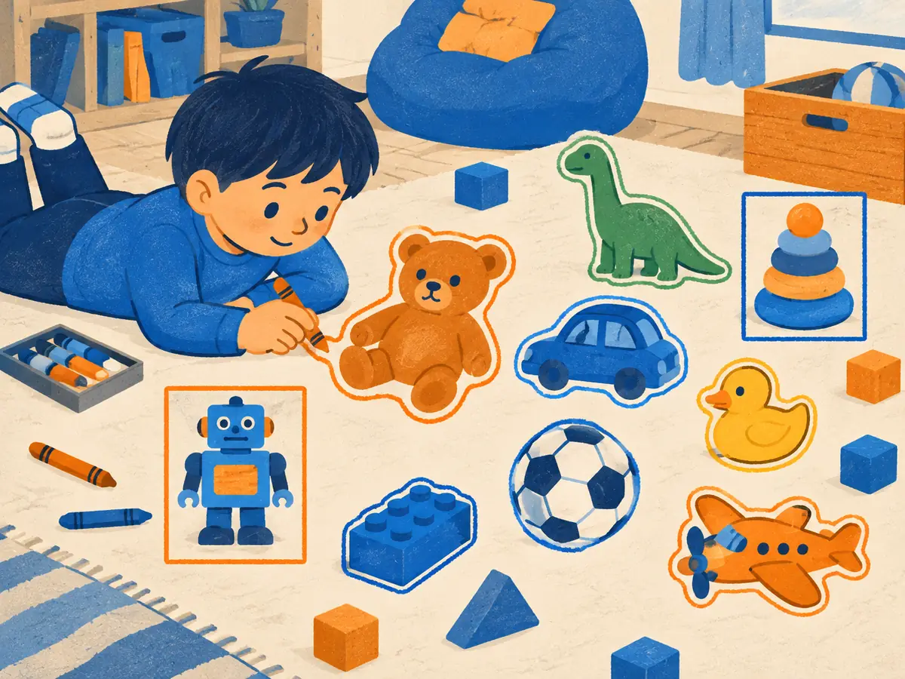

Detection & segmentation (SAM)
"Is there a cat?" is the easy question. A self-driving car, a photo editor or a robot needs where, how many and exactly which pixels. This lesson walks from bounding boxes to Meta's Segment Anything, which outlines almost any object you click on.
By the end you can
- Tell classification, detection, and semantic, instance and panoptic segmentation apart.
- Compute IoU for two boxes and say how it decides whether a detection counts.
- Explain how Faster R-CNN, YOLO, DETR and SAM differ in design.
Guess first; it primes you for the answer.
A predicted box and the true box each cover 100 pixels and overlap on 50 pixels. What is their "intersection over union"?
- 0.5
- 0.33
- 0.25
- 0.75
Which task gives each of two cats in a photo its own pixel mask, but labels the grass and sky as nothing?
- Image classification
- Semantic segmentation
- Instance segmentation
- Object detection
From one label to every pixel
Image classification (ImageNet-style) was the benchmark that drove a decade of vision research, from AlexNet to ViT. But a classifier outputs one label per image. Most applications need more structure, and over the years the field settled on a ladder of tasks:
- Object detection: for each object, a box (usually 4 numbers, such as $x_{\min}, y_{\min}, x_{\max}, y_{\max}$), a class and a confidence. The COCO benchmark (Lin et al., 2014) has 80 such object classes.
- Semantic segmentation: a class for every pixel. Good for road scenes and medical scans, where "how much road" or "which tissue" matters more than counting.
- Instance segmentation: a separate mask per object instance.
- Panoptic segmentation (Kirillov et al., 2019) unifies the last two. Countable things (cats, cars, people) get class + instance ID; amorphous stuff (sky, grass, road) gets a class only.
All of these reuse a classification-style backbone (a CNN, ViT or Swin) to turn pixels into feature maps, and add a task-specific head on top. Denser outputs need features that keep spatial detail, one reason hierarchical backbones like Swin (V1.1) were popular here.
Explain like I'm 5

A child has a photo of a messy playroom. For a few toys, they just draw a rectangle frame around each one: quick, and you can count the toys. That's detection.
For the rest, they trace the exact outline of each toy and colour it in, every toy its own colour. That's instance segmentation: now you know exactly which bits of the photo belong to which toy.
Where it breaks: the model doesn't trace slowly around edges. It decides for every pixel at once which object it belongs to.
A city planner wants to know what fraction of an aerial photo is road, park or building, and doesn't care about individual buildings. Which task fits best?
- Semantic segmentation
- Instance segmentation
- Image classification
Boxes and IoU
How close is a predicted box to the true one? The standard measure is intersection over union (IoU), also called the Jaccard index:
$$\mathrm{IoU}(A, B) = \frac{\lvert A \cap B \rvert}{\lvert A \cup B \rvert}$$ $$\lvert A \cup B \rvert = \lvert A\rvert + \lvert B\rvert - \lvert A \cap B \rvert$$$\lvert A \cap B\rvert$ is the overlap area; $\lvert A\rvert$ and $\lvert B\rvert$ are the two boxes' areas. Subtracting the overlap avoids counting it twice. IoU is 1 for identical boxes and 0 for boxes that don't touch.
For axis-aligned boxes the overlap is easy: its width is $\min(x_{\max}) - \max(x_{\min})$, its height likewise, and either one below zero means no overlap.
Worked example
Truth $A = (0, 0)$–$(4, 4)$; prediction $B = (2, 2)$–$(6, 6)$.
- Areas: $\lvert A\rvert = \lvert B\rvert = 4 \times 4 = 16$.
- Overlap: width $\min(4, 6) - \max(0, 2) = 2$, height also 2, so $\lvert A \cap B\rvert = 4$.
- Union: $16 + 16 - 4 = 28$.
- IoU $= 4/28 \approx 0.14$. Visually the boxes overlap "a quarter", yet IoU is low: it's a strict measure.
Truth $A = (0, 0)$–$(10, 10)$; prediction $B = (5, 0)$–$(15, 10)$, shifted right by half a box.
- Overlap area $\lvert A \cap B\rvert$:
- Union:
- IoU: (below 0.5, so a standard benchmark would count it as a miss)
Try it: drag the prediction
Move or resize the orange prediction (drag it, or use the sliders) and watch IoU against the blue ground truth.
IoU decides what counts as a hit. On PASCAL VOC a detection matches a true object if IoU ≥ 0.5; COCO's main score, AP (often called mAP), averages precision over ten thresholds from 0.50 to 0.95, rewarding tight boxes. IoU also drives non-maximum suppression (NMS): detectors often fire several overlapping boxes on one object, so you keep the highest-scoring box and drop others of the same class that overlap it with IoU above a threshold (say 0.5).
A detector outputs three boxes on the same dog, with scores 0.95, 0.90 and 0.60, all overlapping each other with IoU around 0.8. What does NMS at threshold 0.5 keep?
- All three
- The 0.60 box only
- Only the 0.95 box
Detectors: two-stage, one-stage, and DETR
Two-stage detectors first propose regions, then classify them. R-CNN (Girshick et al., 2014) ran a CNN on about 2,000 proposed crops per image, slowly. Faster R-CNN (Ren et al., 2015) made proposals part of the network: a region proposal network slides over the shared feature map and, at each position, scores 9 anchor boxes (3 sizes × 3 aspect ratios) and nudges their coordinates. The best few hundred proposals are pooled from the feature map and classified. Mask R-CNN (He et al., 2017) added a third small head that predicts a 28 × 28 binary mask inside each box, plus RoIAlign, which samples features without rounding errors so masks line up with pixels. It became the default for instance segmentation.
One-stage detectors predict boxes directly in a single pass. YOLO (Redmon et al., 2016, "You Only Look Once") divides the image into a 7 × 7 grid; each cell predicts 2 boxes with confidences plus class probabilities, at about 45 frames per second. Successors such as SSD, RetinaNet with its focal loss, and many later YOLO versions traded accuracy and speed; as of 2026, YOLO-family models are still a default for real-time detection on cameras and edge devices.
Both families produce many overlapping candidates and need hand-tuned anchors and NMS. DETR (Carion et al., 2020, "End-to-End Object Detection with Transformers") removed both:
- A CNN backbone and a Transformer encoder process the image features.
- A Transformer decoder takes 100 learned object queries; each one cross-attends to the image and outputs one box plus a class, or "no object".
- Training treats detection as set prediction: the Hungarian algorithm finds the one-to-one matching between the 100 predictions and the true objects with the lowest total cost (class + box error), and only matched pairs are pulled toward their targets. Each object gets exactly one prediction, so duplicates are punished and NMS is unnecessary.
DETR was elegant but slow to train (500 epochs on COCO) and weak on small objects. Deformable DETR (Zhu et al., 2020) fixed much of that by attending to a few sampled points, and later DETR variants, including real-time ones, became competitive with YOLO-style models.
Why doesn't DETR need non-maximum suppression?
- It only ever predicts one box per image
- Hungarian matching assigns each true object to exactly one query during training, so the model learns not to output duplicates
- Its anchors never overlap
Segment Anything: promptable masks
Every model above knows a fixed list of classes from its training set. SAM (Kirillov et al., 2023, Meta, "Segment Anything") changed the question to: given a prompt, what's the mask? A prompt can be one or more clicked points (foreground or background), a box, or a rough mask. The model returns the matching mask for nearly any object, with no class names involved.
The architecture is split so that interaction is fast:
- Image encoder: a large ViT (ViT-H in the main model) pretrained as an MAE (V1.3). It runs once per image at 1024 × 1024 and produces a 64 × 64 grid of embeddings. This is the heavy part.
- Prompt encoder: turns points and boxes into small embeddings (positional encodings plus learned type vectors).
- Mask decoder: a light two-layer Transformer that mixes prompt and image embeddings and outputs masks in about 50 ms, fast enough to run in a web browser for each click.
A single click is ambiguous: a point on a shirt could mean the shirt or the whole person. So SAM outputs three masks (roughly part, object and whole) plus a predicted IoU score for each, and you pick one.
The data was as important as the model. Meta's "data engine" moved from human annotators using SAM as a helper, to semi-automatic, to fully automatic labelling, producing SA-1B: about 1.1 billion masks on 11 million images, 99.1% of them generated automatically. SAM 2 (Ravi et al., 2024) extended this to video: a memory of earlier frames lets one click track an object's mask through a clip. SAM 3 (Meta, 2025) added short text prompts such as "yellow school bus", returning masks for every matching instance.
Language-driven detection grew in parallel. Open-vocabulary detectors such as OWL-ViT (Minderer et al., 2022) and Grounding DINO (Liu et al., 2023) use CLIP-style text embeddings (V1.2) as their class list, so you can type the name of the object you want.
Why does SAM output three masks for a single click?
- A point is ambiguous (part, object or larger whole), so SAM proposes several plausible masks and scores each
- To average them into one final mask
- One mask per colour channel
Explain what IoU measures and how DETR's training differs from a detector that uses anchors and NMS.
In panoptic segmentation, how are "stuff" regions such as sky and road treated?
- They are ignored
- Each connected patch of sky gets its own instance ID
- They get bounding boxes
- They get a class label but no instance ID
A prediction fully contains the true box, and its area is twice the true box's area. What is the IoU?
- 1.0
- 0.5
- 0.33
- 2.0
DETR's decoder lets 100 object queries attend to image features. Which idea from earlier lessons is this cross-attention closest to?
- The causal mask of a decoder LLM (M1.4)
- The position embeddings of a ViT (V1.1)
- Attention with queries from one set (the object queries) and keys and values from another (the image features)
- CLIP's contrastive loss (V1.2)
Why is SAM's design split into a heavy image encoder and a light mask decoder?
- The image is encoded once; every new click only reruns the fast decoder, so interaction feels instant
- The decoder is trained on text, the encoder on images
- The encoder only works on video
- So that it can avoid using a ViT
Key takeaways
- Tasks form a ladder: classification → detection (boxes) → semantic (class per pixel) / instance (mask per object) → panoptic (both).
- IoU = overlap / union; detections usually count at IoU ≥ 0.5, COCO AP averages 0.50–0.95, and NMS uses IoU to remove duplicates.
- Two-stage (Faster R-CNN, Mask R-CNN) propose then classify; one-stage (YOLO) predict in one pass; DETR uses object queries and Hungarian matching, with no anchors or NMS.
- SAM segments whatever you prompt: a heavy MAE-pretrained ViT encoder runs once, a light decoder answers each click, trained on SA-1B's 1.1B masks.
Add this lesson's cards to your spaced-review deck.